Проблемы экологии
Экологические проблемы — это совокупность масштабных и взаимосвязанных вызовов, которые затрагивают все аспекты жизни на Земле: от состояния атмосферы и водных ресурсов до здоровья человека, устойчивости экономики и сохранения биоразнообразия. Эти проблемы возникают как в результате естественных процессов, таких как извержения вулканов, лесные пожары или изменения солнечной активности, так и — в гораздо большей степени — вследствие деятельности человека. Индустриализация, урбанизация, рост населения, чрезмерное потребление ресурсов и нерациональное использование природных богатств оказывают разрушительное воздействие на окружающую среду.
Изменение климата
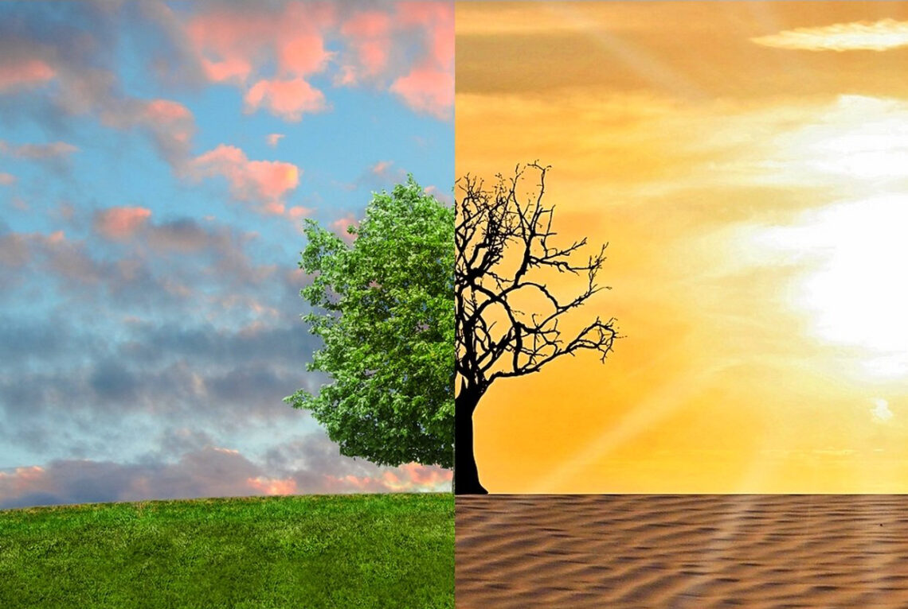Одной из самых острых и обсуждаемых проблем современ ности является изменение климата. Этот процесс представляет собой долгосрочное повышение средней температуры на планете, вызванное главным образом деятельностью человека. Главными виновниками глобального потепления являются выбросы парниковых газов — углекислого газа, метана и закиси азота. Эти вещества образуются при сжигании ископаемого топлива, такого как уголь, нефть и газ, а также в результате вырубки лесов, которые играют роль естественных «фильтров» углекислого газа. Дополнительный вклад вносят интенсивное сельское хозяйство и животноводство, где выделяется значительное количество метана.
Последствия глобального потепления уже сегодня становятся очевидными и ощутимыми для миллионов людей. Ледники в Арктике и Антарктике стремительно тают, что приводит к повышению уровня мирового океана. Это угрожает прибрежным регионам, где проживает значительная часть населения Земли: целые города и государства рискуют оказаться под водой. Кроме того, изменение климата вызывает учащение экстремальных погодных явлений. Засухи становятся более продолжительными и разрушительными, ураганы и тайфуны — более мощными, а наводнения — более частыми. Всё это наносит огромный ущерб экономике, разрушает инфраструктуру и угрожает жизни людей.
Не менее серьёзным последствием является нарушение привычных экосистем. Многие виды животных и растений не успевают адаптироваться к стремительным изменениям климата, что приводит к сокращению биоразнообразия. Например, белые медведи теряют свои охотничьи угодья из-за таяния арктических льдов, а коралловые рифы погибают от повышения температуры океанов и их закисления. Эти процессы нарушают природный баланс и могут привести к цепным реакциям в экосистемах.
Изменение климата также напрямую связано с продовольственной безопасностью. Засухи и наводнения разрушают урожаи, сокращают площади плодородных земель и делают сельское хозяйство менее предсказуемым. Это приводит к росту цен на продукты питания, нехватке продовольствия в бедных странах и увеличению числа климатических беженцев. Изменение климата — это не отдалённая угроза будущего, а реальность, с которой человечество сталкивается уже сегодня. Оно затрагивает все сферы жизни: от экономики и здоровья людей до сохранения природы и стабильности общества. Решение этой проблемы требует глобального сотрудничества, перехода к возобновляемым источникам энергии, сокращения выбросов и формирования экологически ответственного поведения у каждого человека.
Загрязнение Земли
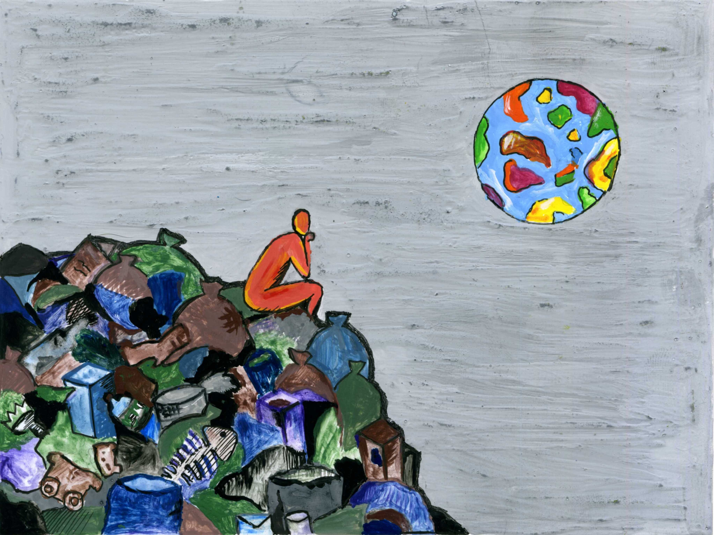Не менее серьёзной проблемой является загрязнение воздуха. Выхлопные газы от автомобилей, выбросы промышленных предприятий и сжигание угля и нефти ухудшают качество атмосферного воздуха, особенно в крупных городах. Это приводит к росту заболеваний дыхательной системы, увеличению числа аллергий и астмы, а также снижению продолжительности жизни населения. Загрязнённый воздух особенно опасен для детей, пожилых людей и людей с хроническими заболеваниями. Загрязнение воды — ещё один тревожный фактор. Химические отходы, пластик, тяжёлые металлы и сточные воды попадают в реки, озёра и океаны, нарушая водные экосистемы. Это приводит к гибели рыб и других водных организмов, ухудшению качества питьевой воды и распространению инфекционных заболеваний. В некоторых регионах мира доступ к чистой воде становится всё более ограниченным, что усугубляет социальные и экономические проблемы.
Проблема отходов, особенно пластиковых, становится всё более актуальной. Современное общество производит огромное количество мусора, большая часть которого не перерабатывается. Пластик разлагается сотни лет, загрязняя почву, воду и даже попадая в пищевые цепи. Свалки растут, а переработка остаётся на низком уровне во многих странах. Это требует пересмотра подходов к потреблению и утилизации. Потеря биоразнообразия — это результат вырубки лесов, браконьерства, загрязнения окружающей среды и разрушения естественных ареалов обитания животных и растений. С каждым годом исчезают десятки видов, и это нарушает хрупкий баланс экосистем. Биоразнообразие играет ключевую роль в поддержании устойчивости природы: оно обеспечивает опыление растений, регулирование климата, очистку воды и почвы.
Причины и пути решения экологических проблем

Причины экологических проблем кроются прежде всего в деятельности человека. Индустриализация и урбанизация часто происходят без учёта экологических норм. Низкий уровень экологической культуры среди населения приводит к безответственному потреблению и загрязнению окружающей среды. Недостаточное регулирование и слабый контроль со стороны властей усугубляют ситуацию. Кроме того, глобализация и ориентация на экономический рост без учёта устойчивости способствуют усилению экологической нагрузки.
Решение экологических проблем требует комплексного подхода. Необходимо переходить к использованию возобновляемых источников энергии — таких как солнечная, ветровая и гидроэнергия. Развитие экологичного транспорта, включая электромобили и общественный транспорт, поможет сократить выбросы. Важно внедрять системы сортировки и переработки отходов, а также озеленять города и восстанавливать леса. Экологическое образование должно стать частью школьной программы и общественной жизни, чтобы формировать сознательное отношение к природе. Международное сотрудничество также играет важную роль — страны должны объединять усилия в рамках глобальных соглашений и программ по охране окружающей среды.
Цели устойчивого развития
Что такое Цели устойчивого развития (ЦУР)?
Цели устойчивого развития (англ. Sustainable Development Goals, SDGs) — это набор из 17 взаимосвязанных целей, принятых Генеральной Ассамблеей ООН в сентябре 2015 года в рамках Повестки дня в области устойчивого развития. Этот документ стал продолжением предыдущих инициатив, таких как Цели развития тысячелетия (ЦРТ), и представляет собой амбициозный и всеобъемлющий план по улучшению жизни людей и сохранению окружающей среды на планете. Главная идея ЦУР заключается в том, что все страны мира — независимо от уровня экономического развития — должны совместно работать над решением глобальных проблем, таких как бедность, голод, неравенство, изменение климата, деградация окружающей среды, отсутствие доступа к образованию и здравоохранению. Цели разработаны таким образом, чтобы учитывать интересы как развитых, так и развивающихся государств, и предполагают участие не только правительств, но и бизнеса, гражданского общества, научного сообщества и каждого отдельного человека.
Существуют следующие цели:
Ликвидация нищеты
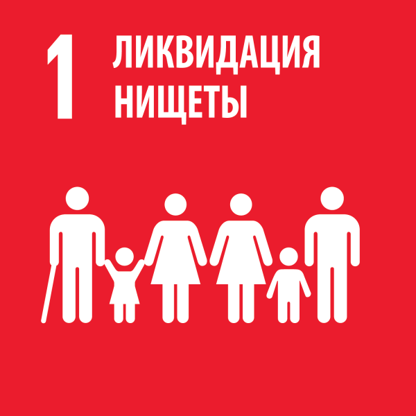Ликвидация голода
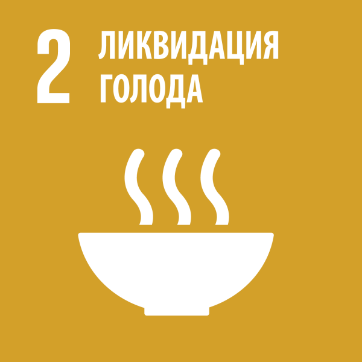Хорошее здоровье и благополучие
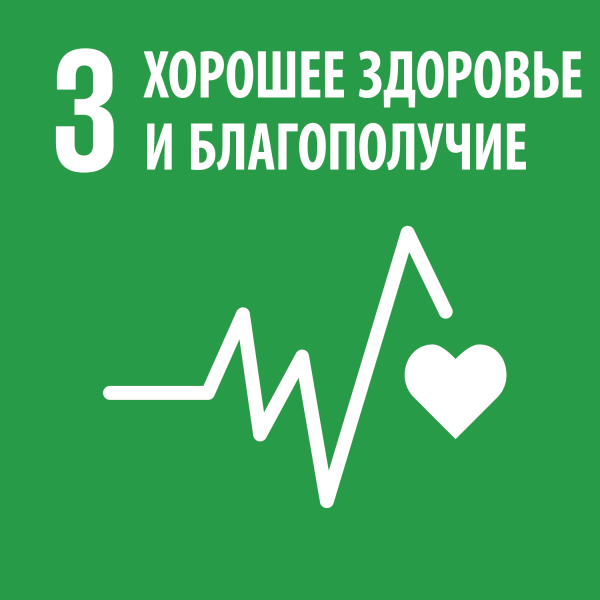Качественное образование
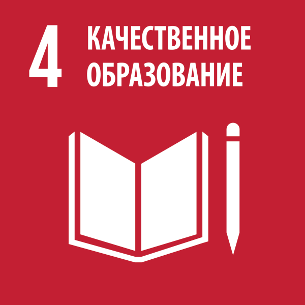Гендерное равенство

Чистая вода и санитария

Недорогостоящая и чистая энергия
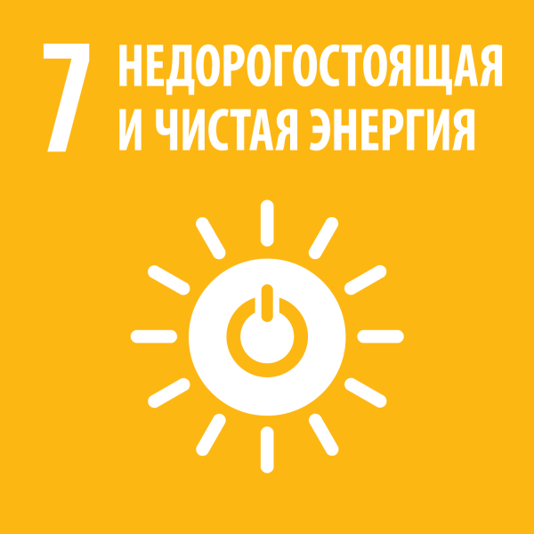Достойная работа и экономический рост
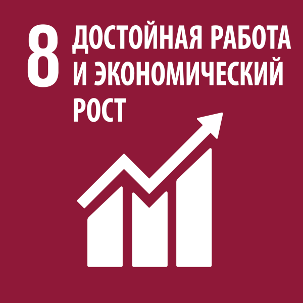Индустриализация, инновации и инфраструктура
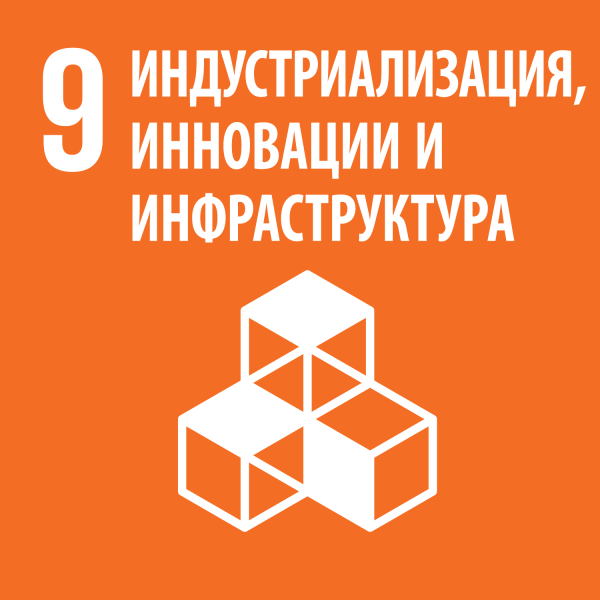Уменьшение неравенства
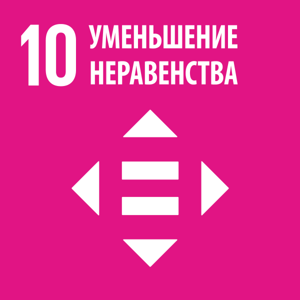Устойчивые города и населенные пункты
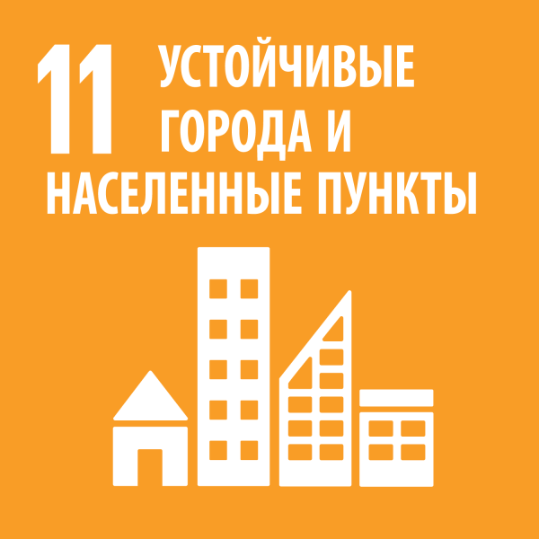Ответственное потребление и производство
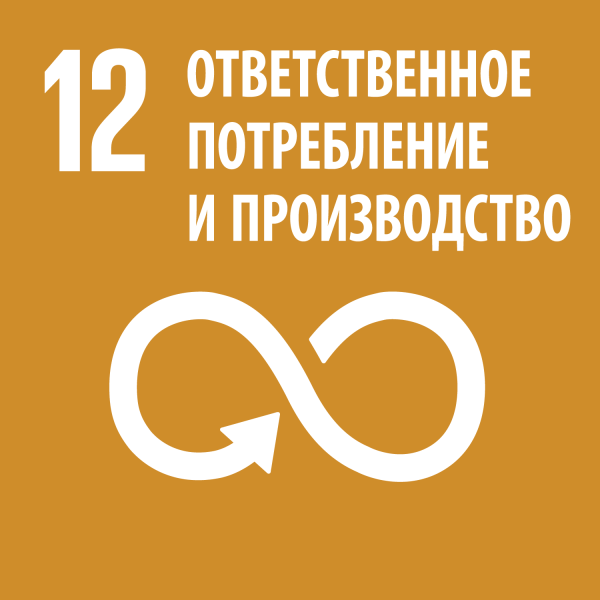Борьба с изменением климата
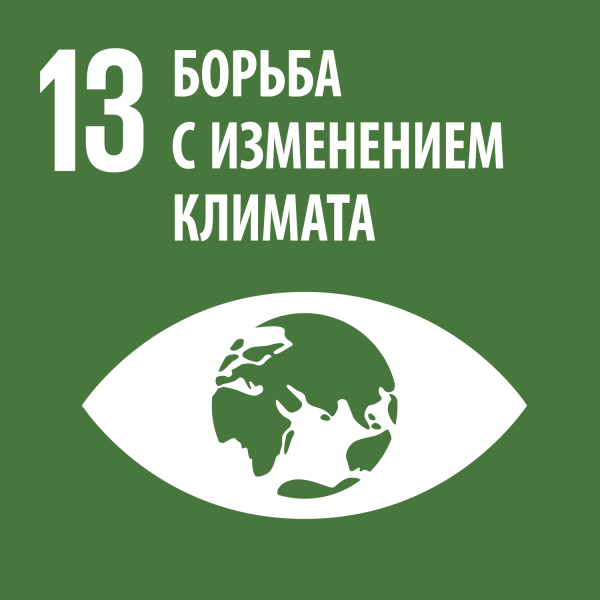Сохранение морских экосистем
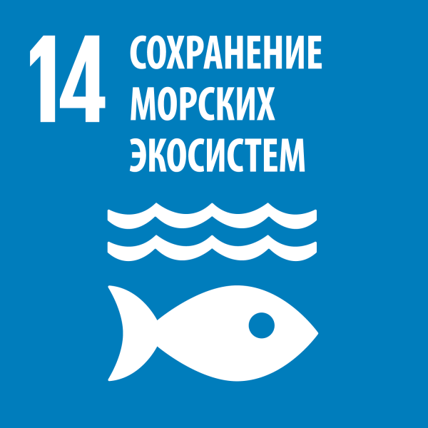Сохранение экосистем суши
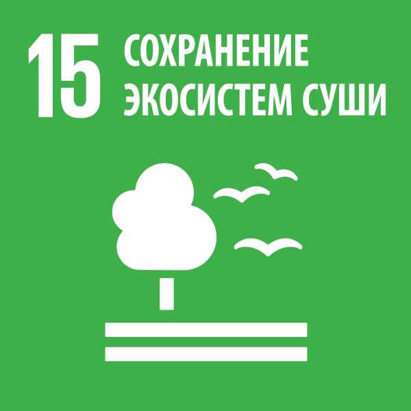Мир, правосудие и эффективные институты
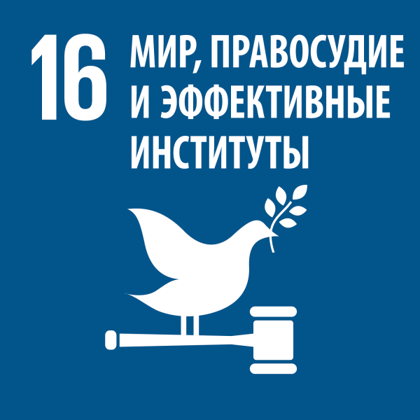Партнерство в интересах устойчивого развития
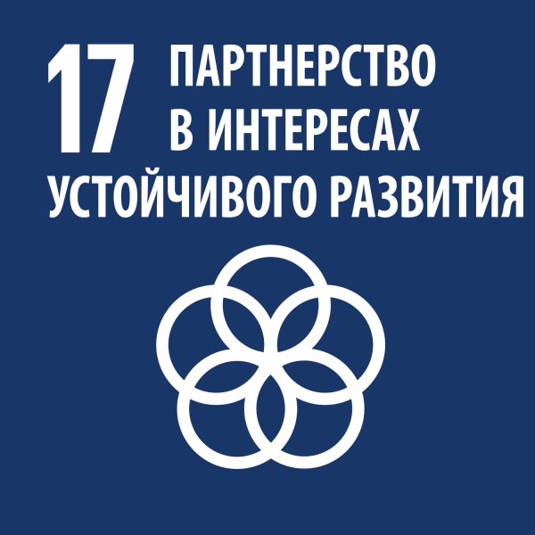
Почему это важно?
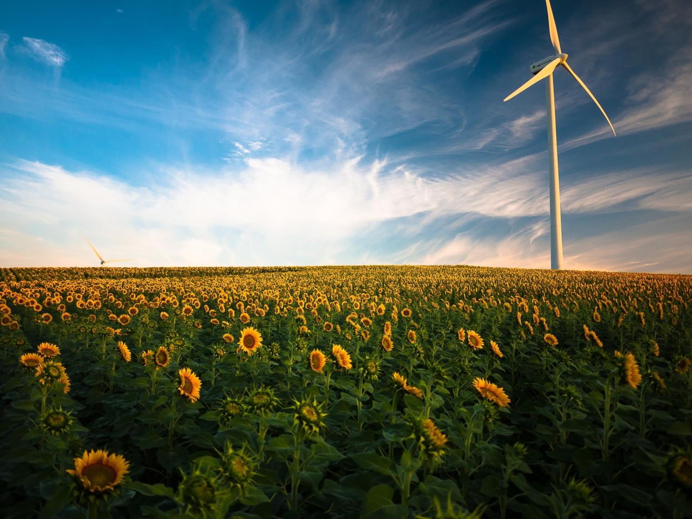Цели устойчивого развития (ЦУР) — это не просто декларации или формальные заявления. Их значение выходит далеко за рамки политических программ — они формируют основу для стратегического планирования, международного сотрудничества и повседневных решений. Реализация ЦУР способствует созданию более справедливого, безопасного и устойчивого мира для будущих поколений. Это означает мир без крайней бедности, с равным доступом к образованию и здравоохранению, с чистой водой и воздухом, с устойчивыми городами и сохранённой природой. Это мир, в котором технологии и прогресс служат людям, а не угрожают им. ЦУР — это не просто набор задач, а глобальный договор о будущем, в котором участвуют все: от глав государств до школьников.